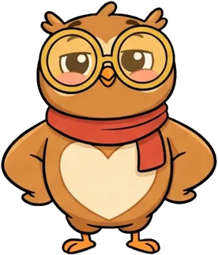

New rehearsal
Oli plays the interviewer, investor, or opponent, then tells you the two things to fix before the real thing.
How a rehearsal goes
Add your resume, slides, or script so Oli knows the details.
He asks out loud and follows up when an answer is vague.
Why this internship, and why now?
YOUUm, so I've been building speaking tools, like, all year...
OLI (following up)What did one of those tools actually change for users?
The most important issues first, each with a clip of the moment.
Feedback
Podium listens to your words and your voice, and watches eye contact and gestures if your camera is on. Then it marks up your answer the way a coach would.
So, on our capstone project, um, a teammate wanted to rebuild the backend the week before the deadline. ‖ 3.4s1 I, like, didn't think we had time, so we compared both plans with our TA and kept the old backend. We shipped on time, and the TA used our plan as an example for the next class.2
A 3.4 second pause in the middle of a sentence. Anchor each answer to three words: situation, action, result.
Watch the moment, 0:42Interview answers land best under two minutes. Lead with the result next time.
Watch the moment, 1:10Strong eye contact while you gave your example.
Why you can trust it
IFan interview answer runs past two minutes, THENsuggest the STAR format and ending on the result.
One of the 17 rules Oli follows, reviewed by our domain experts.
